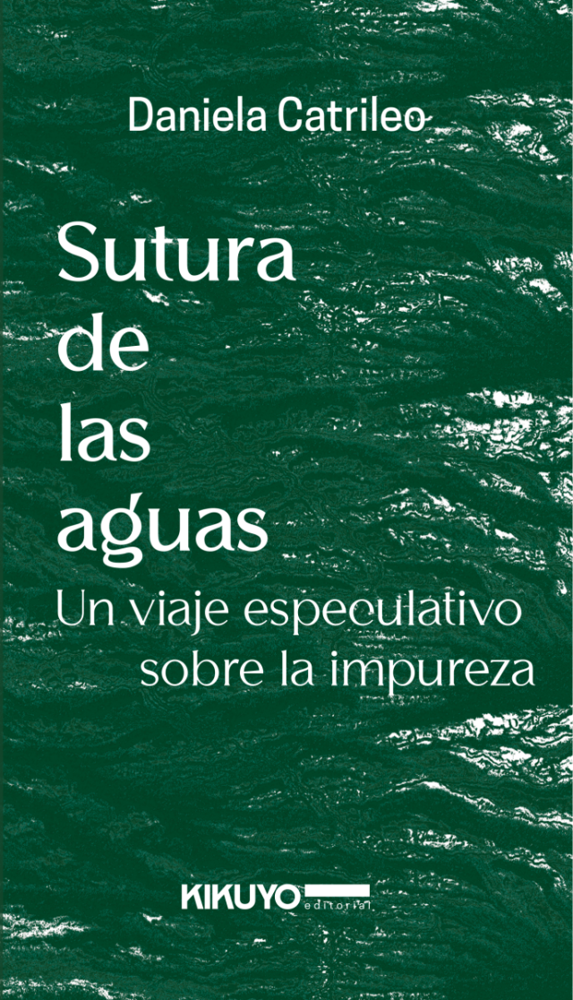

Autoras
Aquí encontrarás la biografía de tus autoras favoritas y sus libros más destacados


Mónica Ojeda Franco
Nació en Educador el 17 de mayo de 1988. Es una escritora y poeta caracterizada por explorar el terror psicológico. Además, se le considera como una de las novelistas más relevantes de la literatura latinoamericana contemporánea.
Nació en Educador el 17 de mayo de 1988. Es una escritora y poeta caracterizada por explorar el terror psicológico. Además, se le considera como una de las novelistas más relevantes de la literatura latinoamericana contemporánea.

Han Kang
Nació en Corea del Sur el 27 de noviembre de 1973. Es una escritora reconocida por su prosa poética y su capacidad para abordar temas como la violencia, el trauma histórico y la fragilidad humana. El 2024, Han Kang recibió el Premio Nobel de Literatura.
Nació en Corea del Sur el 27 de noviembre de 1973. Es una escritora reconocida por su prosa poética y su capacidad para abordar temas como la violencia, el trauma histórico y la fragilidad humana. El 2024, Han Kang recibió el Premio Nobel de Literatura.
Rita Indiana
Nacio el 11 de junio de 1977 en República Dominicana. Es una escritora reconocida por fusionar elementos de la literatura caribeña y la música popular dominicana. Su obra literaria aborda temas como la identidad de género, la sexualidad, la política y la cultura popular.
Nacio el 11 de junio de 1977 en República Dominicana. Es una escritora reconocida por fusionar elementos de la literatura caribeña y la música popular dominicana. Su obra literaria aborda temas como la identidad de género, la sexualidad, la política y la cultura popular.

Daniela Catrileo Cordero
Nació en el año 1987 en Chile. Es una escritora, poeta, filósofa y activista mapuche reconocida por su exploración de la memoria colectiva, la identidad y la resistencia indígena. Lo anterior le ha entregado reconocimiento a nivel internacional.
Nació en el año 1987 en Chile. Es una escritora, poeta, filósofa y activista mapuche reconocida por su exploración de la memoria colectiva, la identidad y la resistencia indígena. Lo anterior le ha entregado reconocimiento a nivel internacional.

Mariana Enríquez Ledesma
Nació en Argentina el 6 de diciembre de 1973. Es una escritora y periodista reconocida por el género del terror. Su literatura tiene una mirada crítica hacia la desigualdad y la violencia. Ha sido ampliamente elogiada por la crítica internacional.
Nació en Argentina el 6 de diciembre de 1973. Es una escritora y periodista reconocida por el género del terror. Su literatura tiene una mirada crítica hacia la desigualdad y la violencia. Ha sido ampliamente elogiada por la crítica internacional.
Karina Pacheco Medrano
Nació en en Perú en el año 1969. Es una escritora y antropóloga que aborda temas como la identidad, la memoria y la cultura andina. Ha sido reconocida por su profundidad narrativa y por explorar la memoria en el contexto peruano.
Nació en en Perú en el año 1969. Es una escritora y antropóloga que aborda temas como la identidad, la memoria y la cultura andina. Ha sido reconocida por su profundidad narrativa y por explorar la memoria en el contexto peruano.